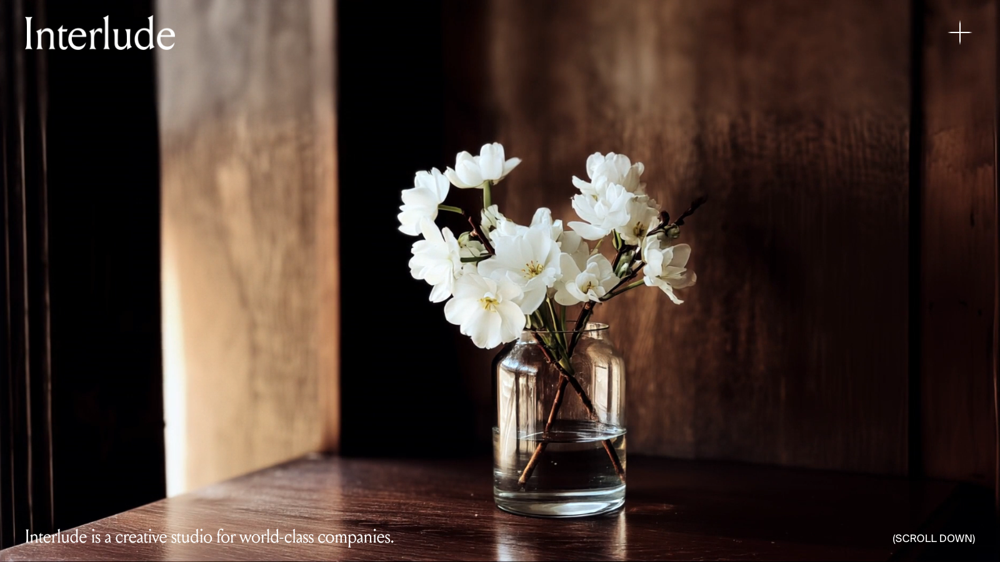

Matthew runs Interlude, a creative studio designing for founders and fund managers. The studio's sharpest arguments lived in its sales and partnership calls and never reached the feed. We run the posting for them: posts in his real voice, case studies out the door, week after week.

Interlude's authority compounds in front of the founders and fund managers it designs for. The raw material was all there: sales calls, partnership calls, finished client work worth a case study each.
What happened instead: drafts written by hand when someone found an hour, case studies piling up unposted, and a cadence that slipped behind client delivery week after week.
The week's posting is done for them, delivered through the Notion the studio already lives in.
The cadence holds, whatever client delivery looks like that week.
Lead magnets written and designed for the studio's exact audience: the founders and fund managers who hire a studio like Interlude. Published under their brand, capturing the hand-raisers into their list.
Founders and funds: the people who buy design at their level.
A studio that sells taste needs assets that hold the studio's own bar. Ours have to pass their eye first.
Every capture stays theirs, with a launch post that goes out alongside it.
The thinking was always happening on those calls. Now it reaches the feed in his voice, the case studies go out, and hand-raisers land on the studio's list. Nothing on their plates.
If your best material lives in calls and unposted case studies, it is sitting there ready. We run the publishing.